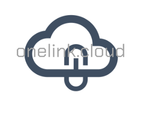

OneLink
Easy, Fast and Secure way to transfer files and folders of every size. Access your local files from everywhere without uploading them anywhere.
Unlike all other existing file-sharing alternatives, you do not need to copy your files to any server on the Internet. OneLink does not host your files. The files are streamed from your PC to the client web-browser through an encrypted connection.
The OneLink App transforms your PC in the server, giving you full control on the files to transfer. Your machine does not need the cloud, your machine becomes the cloud and you decide how long your files will be available and monitor when they are downloaded.
OneLink was developed with in mind security, privacy and usability. This is achieved through encrypted connections, network transparency and a user friendly desktop application that does not require any router or firewall configurations.